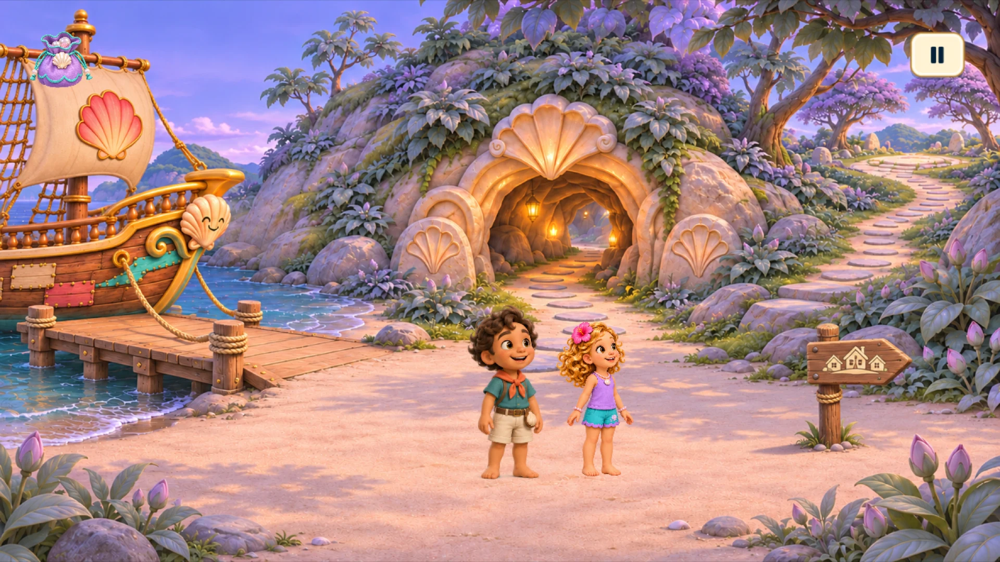
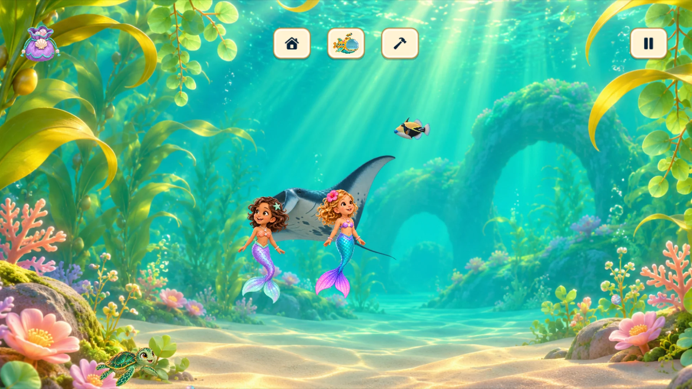
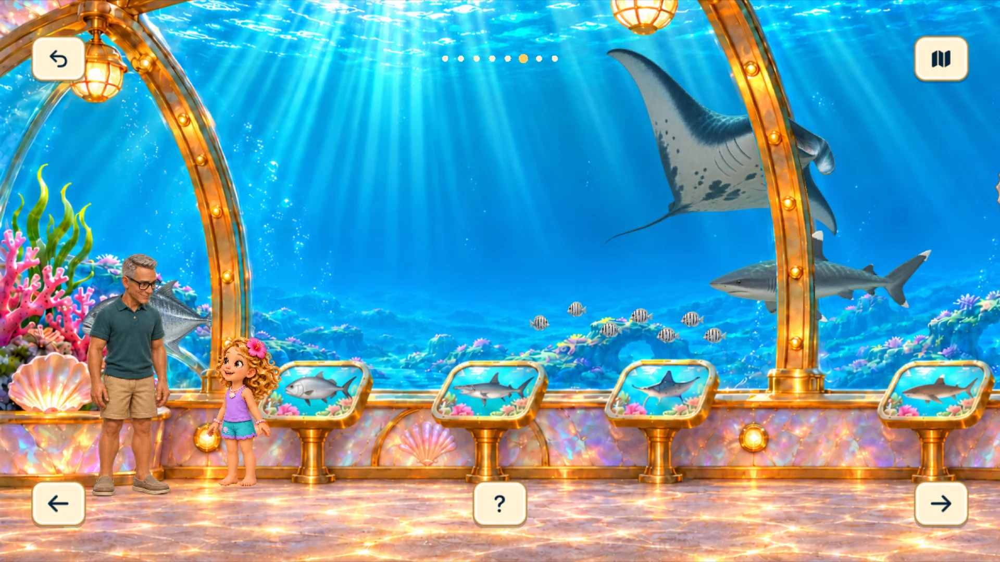
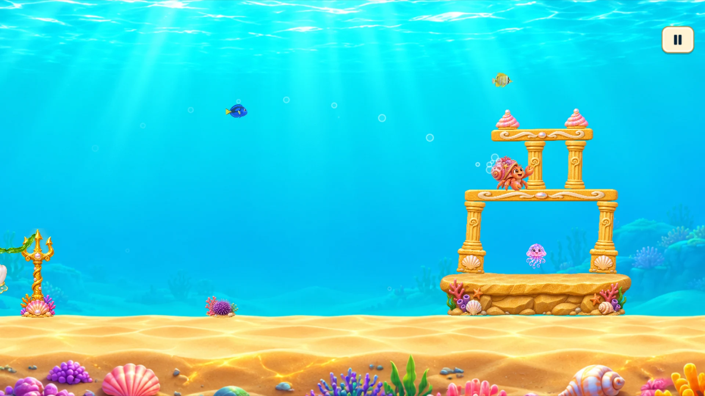

Listen and discover
Spoken dialogue, picture signs, and simple interactions help guide young explorers.
A mermaid adventure for little explorers
Become a mermaid. Make a friend. Discover a world that’s yours to explore.
Dive into the gameComing to Mac & iPad · $3.99 USD one time
Meet Naomi. Follow your curiosity.
From a mysterious island to a glowing reef, Friendship Shell brings storytelling, ocean discovery, creative play, and arcade fun together.

01 / An island adventure
Follow Naomi and Luke through a story of friendship. Sail to an island, explore a cave, solve picture puzzles, and help return the Guardian home.

02 / Your ocean, your imagination
Swim through different ocean environments, find pearls, and decorate your reef. Add colorful fish and make the underwater world feel like your own.

03 / Papa’s aquarium
Meet sea creatures, from tiny reef neighbors to magnificent manta rays. Tap picture signs to hear Papa explain what you’re seeing, and watch Luke feed the fish.

04 / A playful little detour
Take a break with Krabby Catapult, a cheerful underwater arcade game. Discover it in the ocean, then return through Naomi’s tablet after your first launch.
For parents & little players
Spoken dialogue, picture signs, and simple interactions help guide young explorers.
One purchase. No advertisements, subscriptions, or in-app purchases. Pearls are earned through play.
Play on Mac or iPad. Game progress is saved on the device. No player account is required.
A mermaid adventure. An ocean playground. A friendship to remember.
Coming to the App Store · $3.99 USD
Local prices may vary.